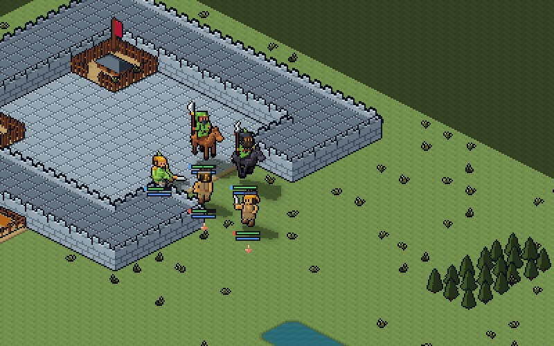
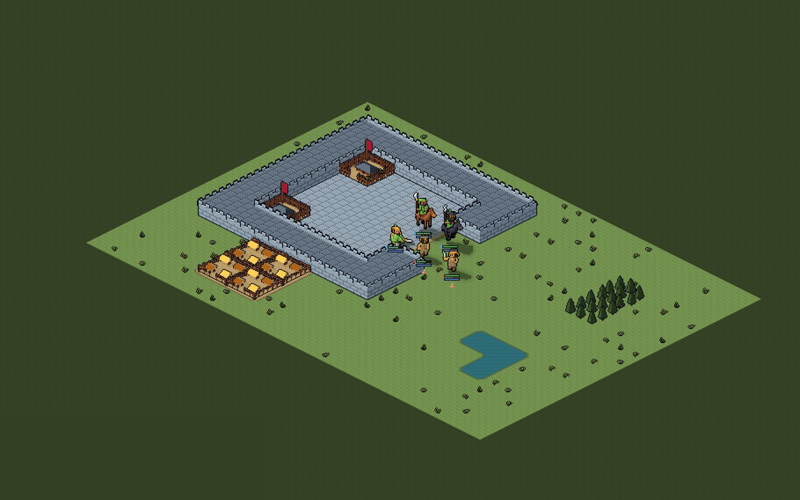
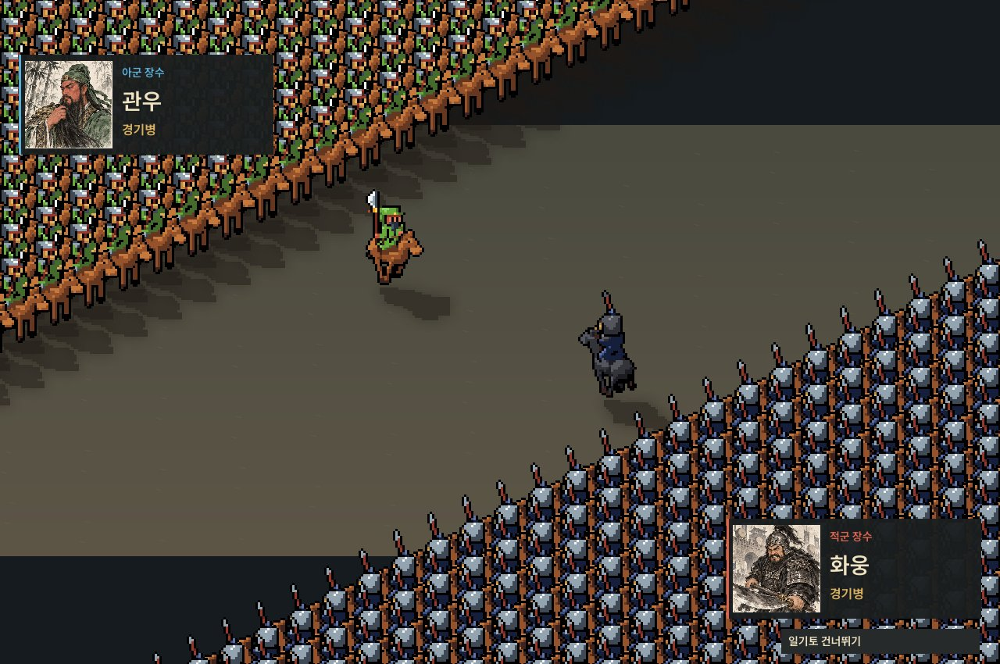
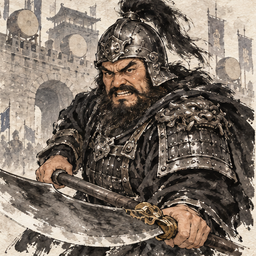

추려 낸 여덟 가지
2차 의견을 반영했습니다. 3·4·9번은 그대로 두었고, 8번(죽간 전투 기록)은 뺐습니다. 다만 글자 색으로 피해·회복·장수 이름을 구분하는 방식은 지금 전투 로그에 그대로 쓰면 됩니다.
- 1지금 그리는 맵 밖 타일을 다듬기
- 2먹방울을 빼고 붓질과 글자만
- 3·4그대로
- 5도트 부품으로 조립한 두루마리
- 6메뉴 크기 설정(모바일용 크게)
- 7사선으로 부딪히는 초상, 장수 이름을 크게
8죽간 전투 기록뺌- 9그대로
맵 밖 타일에 깊이 주기
맵 밖에도 이미 타일을 그리고 있으니, 그 타일만 다듬습니다. 지금은 한 가지 색으로만 깔려 있어서 화면이 비어 보입니다. 지금 / 다듬은 뒤로 비교해 보세요.
- 타일
- 맵 안과 같은 풀 타일을 쓰되 채도와 밝기를 낮춥니다. 풀포기·돌·작은 숲을 드문드문 놓아 들판이 이어져 보이게 합니다
- 멀어짐
- 맵에서 멀수록 안개색으로 흐려지고 가장자리는 어두워집니다. 맵 경계에는 얇은 밝은 테를 둘러 싸울 수 있는 칸이 바로 보입니다
- 움직임
- 구름 그림자가 천천히 들판을 지나갑니다. 맵 안까지 지나가므로 화면 전체가 살아 있어 보입니다

붓질 위에 써지는 턴
먹방울을 뺐습니다. 굵은 붓질이 화면을 가로지르고, "제7턴"이 붓으로 쓰듯 왼쪽부터 써지고, 진영 이름 아래에 그 진영의 색으로 밑줄이 그어집니다.
- 시간
- 약 1.4초. 자동 진행 중에는 0.8초짜리 짧은 판
- 구현
- 붓질 PNG 한 장 + 붓글씨 숫자 시트. 글자는 왼쪽부터 자르는 사각형만 넓히면 됩니다

옻칠 바, 이름패, 따라가는 카메라
나뭇결 옻칠 바에 금테와 구름무늬, 턴 원패, 한글 세로 이름패. 승패 조건 두루마리는 장 시작 때 한 번만 펼쳐지고 그대로 남습니다. 지난 시안에서 계속 여닫힌 건 데모를 반복 재생해서 생긴 일입니다.
- 이름패
- 누르면 카메라가 그 장수를 화면 가운데로 옮기고 바로 선택합니다(이동 범위 표시). 행동을 마친 패는 어두워지며 흔들립니다. 무대 안 이름패를 직접 눌러 봐도 됩니다
- 적 차례
- 이번에 움직이는 적들(동시에 움직이는 무리)의 가운데 지점을 구하고, 그 지점에 가장 가까운 적에게 카메라를 맞춥니다. 무리가 바뀔 때만 카메라가 이동해서 화면이 덜 흔들립니다
- 많을 때
- 출전이 8명을 넘으면 남은 장수만 보이고 "+3"처럼 접습니다
붓글씨 피해 숫자와 체력 바
붓글씨 숫자가 튀었다 가라앉고 먹물이 튑니다. 치명타는 "치명"과 금빛 고리, 회복은 초록 숫자와 오르는 빛.
- 체력 바
- 유닛 폭의 약 1.2배, 4칸 눈금, 빨간 칸이 먼저 깎이고 흰 잔상이 따라 줄어듦. 아래 얇은 줄은 병법치
- 겹침
- 같은 유닛 숫자는 위로 쌓고, 이웃 숫자와 겹치면 옆으로 비킴

부품으로 조립한 두루마리
부품 해상도를 두 배로 올렸습니다(축 꼭지의 둥근 금장, 축과 꼭지 사이 놋쇠 고리, 마름모 무늬 비단 띠, 섬유결 있는 종이). 펼칠 때는 빠르게 튀어 나가 살짝 넘쳤다가 자리 잡고, 접을 때는 점점 빨라지며 말려 들어갑니다. 대사 길이에 따라 폭이 바뀔 때도 같은 탄력을 씁니다.
- 부품
- 축(위·아래 꼭지 + 몸통 반복), 위·아래 비단 띠(가로 반복), 종이(가로·세로 반복), 축 옆 그늘. 말풍선처럼 반복 부분만 늘리면 어떤 크기든 됩니다. 부품 보기로 확인할 수 있습니다
- 글씨
- 밝은 종이 위 진한 먹색, 글자 크기를 키웠습니다. 화자 이름은 주칠 명패
사각 메뉴와 UI 크기 설정
메뉴는 그대로 두고 크기 설정을 붙였습니다. 아래 UI 크기 버튼을 눌러 보세요. 글자·줄 높이·아이콘·하위 목록 간격이 함께 커져서 크게 해도 비율이 깨지지 않습니다.
- 설정
- 설정 창에 "UI 크기" 80–160% 단계 슬라이더. 모바일 첫 실행은 130%, PC는 100%. 저장 파일이 아니라 기기별 설정으로 둡니다
- 취소
- 네. 메뉴·하위 목록이 떠 있을 때 메뉴 밖 맵을 누르면 한 단계 취소입니다(지금 코드도 같음). 우클릭·Esc·안드로이드 뒤로 가기도 같습니다. 다만 지금은 공격 대상 고르는 단계에서 대상이 아닌 칸을 누르면 아무 일도 없는데, 이것도 취소로 맞추길 권합니다
- 범위
- 명령 메뉴, 하위 목록, 예측 창, 정보 카드, 상단 바, 대화창 글씨에 같은 배율. 맵 확대/축소와는 따로 움직입니다
- 구현
- 지금 skin.go의
scale(창 크기 맞춤) 위에uiScale을 하나 더 곱합니다. 화면 밖으로 넘치면 메뉴를 유닛 반대쪽으로 붙입니다


사선으로 부딪히는 두 장수
위아래 띠가 닫힌 뒤, 관우는 오른쪽이, 화웅은 왼쪽이 같은 사선으로 잘린 채 양쪽에서 달려와 잘린 면끼리 꼭 맞물립니다. (지난번엔 초상 그림이 칸보다 좁아서 사선 대신 그림의 세로 끝이 보였습니다.) 부딪히는 순간 이음매가 번쩍이고 화면이 흔들립니다. "일기토" 글자 대신 관우, 화웅 이름을 그 붓글씨 크기로 하나씩 찍습니다.
- 색
- 아군 이름은 초록 빛, 적 이름은 붉은 빛(진영색). 이름 위 작은 글씨로 아군/적군 장수
- 구현
- duel_scene.go 시작 약 1.8초. 초상 두 장을 사선 마스크로 자르고, 이름은 붓글씨 폰트를 글자 단위로 크게 그립니다
먹이 번지며 나타나는 장수
장수가 처음 등장하거나 합류할 때, 수묵 초상이 먹이 스미듯 번지며 드러나고 이름이 붓으로 써진 뒤 자와 소개가 이어집니다.
- 문구
- characters.json 소개문 그대로
- 구현
- 무작위로 커지는 원 여러 개로 만든 마스크로 초상을 잘라 그립니다. 장면 데이터에 "첫 등장" 단계 추가